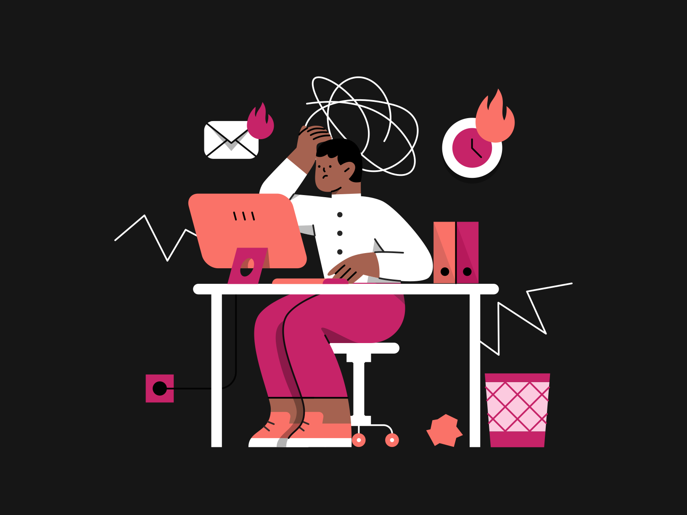

¿QUÉ SON LAS TIC'S
Las tecnologías de Información y Comunicación (TICs) son las herramientas que se utilizan para la distribución de la información a través de elementos tecnológicos como la televisión, la radio, los celulares, las computadoras, entre otros.
